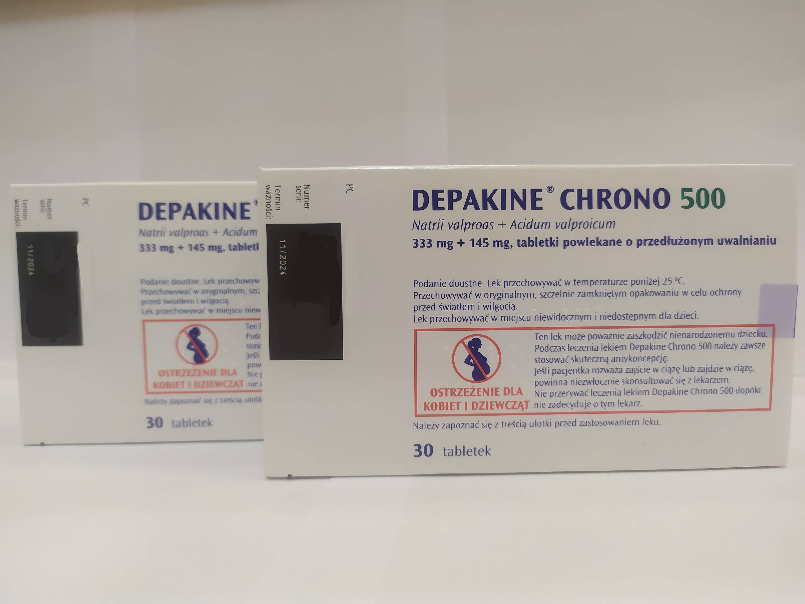

Контактная информация:
Цена: 400 грн/уп.
В наличии
Производитель: Польша
Цена: 400 грн/уп.
В наличии
Именно в FarmItal вы можете купить Депакин хроно в Украине, Гарантированно Качественный!
Доставка Depakine Chrono осуществляется транспортными компаниями, сроки выполнения заказа оговариваются менеджером Фармитал. Вы можете заказать таблетки Депакин Хроно в городах: Одесса, Херсон, Чернигов, Северодонецк, Бердянск, Бровары, Днепр, Винница, Киев, Славянск, Полтава, Краматорск, Белая Церковь, Каменское, Мариуполь, Черновцы, Александрия, Камь янец-подольский, Львов, Запорожье, Кропивницкий, Житомир, Ивано-Франковск, Сумы, Черкассы, Константиновка, Мелитополь, Кривой Рог, Ровно, Луцк, Никополь, Павлоград, Ужгород, Кременчуг, Лисичанск, Хмельницкий, Тернополь, Харьков, Николаев, а также в других населённых пунктах Украины.
Таблетки.
Основным показанием к применению препарата Депакин Хроно 500 мг, желательно в качестве монотерапии, является первичная генерализованная эпилепсия: малые эпилептические приступы/абсансная эпилепсия, массивные билатеральные миоклонические судороги, большие приступы эпилепсии с миоклонией или без нее, фотосенсы. >
Также препарат Депакин Хроно® 500 мг как монотерапия или в комбинации с другими противоэпилептическими средствами эффективен при таких заболеваниях:
Благодаря лекарственной форме Хроно (пролонгированное действие) суточную дозу можно применять за один прием. В идеале препарат следует принимать в начале еды. Чаще следует применять следующие суточные дозы:
Самолечение может быть вредным для вашего здоровья! Перед началом лечения обратитесь к вашему врачу!!
Побочные реакции распределены по системе органов, частота их возникновения определена следующим образом: очень часто ≥ 10%; часто ≥ 1 и < 10%, редко ≥ 0,1% и < 1%; редко ≥0,01% и < 0,1%; очень редко < 0,01% неизвестно (нельзя определить на основе имеющихся данных). Врожденные, родственные и генетические расстройства. Врожденные пороки развития и нарушения развития нервной системы (см. раздел «Особенности применения» и «Применение в период беременности или кормления грудью»). Со стороны крови и лимфатической системы. Часто: анемия, тромбоцитопении. Сообщалось о случаях дозозависимой тромбоцитопении, которые, как правило, проявлялись в систематическом порядке и не имели никаких клинических последствий. У пациентов с асимптомной тромбоцитопенией простое снижение дозы лекарственного средства, если возможно, с учетом уровня тромбоцитов и контроля заболевания обычно приводит к устранению тромбоцитопении.
При плазменных концентрациях выше в 5-6 раз терапевтического максимума возможно возникновение тошноты, рвоты и головокружения. Признаки острой массивной передозировки обычно включают следующие: поверхностная или глубокая кома, мышечная гипотония, гипорефлексия, миоз, расстройства дыхательной функции, метаболический ацидоз, артериальная гипотензия, циркуляторный коллапс/шок. Бывали случаи, когда массивная передозировка заканчивалась летальным исходом. Однако прогноз при передозировке обычно благоприятный.
Хранить в недоступном для детей месте.Хранить в оригинальной упаковке при температуре не выше 25 °С.